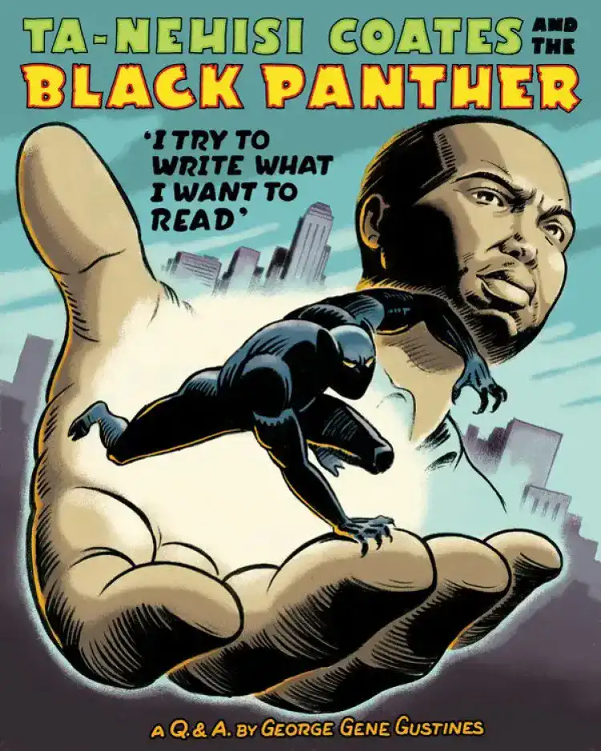
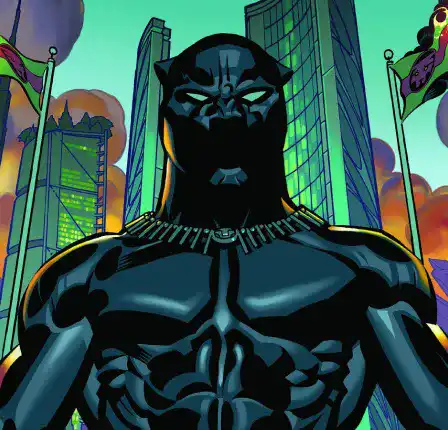

<!DOCTYPE html>
<html lang="FR"x-data="{menuIsOpen: false}" :class="{noscroll:menuIsOpen}"></html>
<head>
    <meta charset="UTF-8">
    <meta http-equiv="X-UA-Compatible" content="IE=edge">
    <meta name="viewport" content="width=device-width, initial-scale=1.0">
    <link rel="stylesheet" href="../src/css/style.css">
    <link rel="alternate" hreflang="en" href="http://architect.claudesamba.fr
    " />
<link rel="alternate" hreflang="es" href="http://architect.claudesamba.fr
" />
<link rel="alternate" hreflang="de" href="http://architect.claudesamba.fr
" />
    <script defer src="https://unpkg.com/alpinejs"></script>
    
    
    <title>Film</title>
   
    <link rel="icon" href="../public/icones/logo.svg" />
</head>

<body>
    <header class="header">
       
        <div class="header__logo-lang">
        <a href="../en/index.html" onclick="document.cookie = 
        `nf_lang=en; path=/ ; SameSite=Strict`
        ">
          
        </a>
        </div>
        <div class="header__logo">
             <a class="header__link-logo" href="/fr/index.html">KULTURE</a>
        </div>


        <button  class="header__menubtn menubtn" aria-controls="mainNav" @click="menuIsOpen = !menuIsOpen" :class="menuIsOpen &&'menubtn--open'" >
            <span class="menubtn__bar"></span>
        </button>

          <nav  id="mainNav" class="header__menu menu"  x-show="menuIsOpen" x-transition.duration.800ms >
             
                <a  class="page-title" href="../fr/index.html">
                    KULTURE
                </a>
            

            <ul class="menu__list">

                <li class="menu__item">
                    <a  class="menu__link "href="film.html">
                        Black Panther
                    </a>
                </li>


                <li class= "menu__item">
            <a class="menu__link "href="realisater.html">
                Ryan Coogler
            </a>
        </li>


        <li class= "menu__item">
            <a class="menu__link "href="musique.html">
              Lift Me Up 
                 
            </a>
        </li>


        <li class= "menu__item">
            <a class="menu__link " href="livre.html">
        A nation under our feet 
        </a>
    </li>


        <li class= "menu__item">
            <a class="menu__link " href="contact.html">
            Contact
        </a>
    </li>

      
    </header>


    <main>
    <h1 class="titre_article"> A Nation Under Our Feet - L'œuvre révolutionnaire de Nehisi Coates ”  </h1>
<p class="date_publication"> Par Claude MALANDA 
    </p> 
    
    <p class="date_publication"> Publier le 24 / 10 / 2024 , mis à jour aujourd’hui à 9h45
    </p>
   
    <div class="chapo">
    <p> Lorsque l’on parle de Black Panther, la première image qui vient l’esprit est très souvent celle du super-héros du Wakanda. Cependant, le personnage de Black panthère a une histoire bien plus riche qui va au-delà de l'aventure sur le grand écran, l’une des œuvres les plus marquantes est le livre de Ta-Nehisi Coates.</p>
    </div>
  



<p>Le comics "Black Panther: A Nation Under Our Feet" met en scène le personnage emblématique de Marvel, Black Panther, également connu sous le nom de T'Challa. L'histoire se déroule dans le royaume fictif africain de Wakanda, le pays d'origine de Black Panther, qui est connu pour sa technologie avancée et ses ressources précieuses, notamment le vibranium.</p>
<p>
   L'intrigue de la série explore les défis auxquels est confrontée la nation de Wakanda lorsqu'un groupe terroriste surhumain déclenche une révolte, le royaume de Wakanda est plongé dans le chaos. T'Challa, en tant que roi et Black Panther, doit faire face à des menaces internes et externes tout en cherchant à guider son pays vers un avenir meilleur.
   </p> 
  <p>Le livre met en avant des thèmes importants tels que le leadership, la politique, la révolution et l'identité. Elle explore également les tensions et les conflits qui surgissent au sein de la société wakandaise.</p>
   
  <div class="section_clair">

    <div class="image-container">
    
   </div>
   
   <p>
      Il existe un  lien étroit entre ce livre et le film sorti en 2018. Ce lien  réside dans le fait que "Black Panther: A Nation Under Our Feet" offre une perspective approfondie sur le personnage de Black Panther, son royaume de Wakanda, et les défis auxquels il est confronté en tant que leader. Tandis que le film "Black Panther", réalisé par Ryan Coogler, s'inspire des éléments du personnage de Black Panther et de l'univers du Wakanda mentionné dans le livre, bien qu'il présente une histoire indépendante.
   </p> 

  </div>

  <div class="image-container">
  
</div>

<p>Ta-Nehisi Coates, écrivain, journaliste et essayiste américain, a laissé une empreinte indélébile sur la littérature et les débats sociaux contemporains. Avant de se consacrer à l'écriture, sa carrière journalistique l'a vu travailler en tant que correspondant pour le prestigieux magazine "The Atlantic," où il a abordé divers sujets, de la politique à la culture en passant par les questions raciales. Ses articles ont joué un rôle clé dans l'exploration de problématiques cruciales et ont stimulé des débats essentiels.
   </p> 
  <p>Lire aussi :  Une nation sous nos pieds : Black Panther, afrofuturisme et potentiel de réflexion  </p>

<p> Sa bibliographie comprend des ouvrages influents qui ont suscité des débats et des réflexions profondes sur la société américaine. Parmi ses œuvres notables , nous en avons cités quelques une  </p>

<div class="button-article"> 
    
   <button class="btn--fill"> <a a class="btn__fill" href="frise.html"> En savoir plus</a>
  </button> 
</div>

</main>
<footer class="footer">

    <div class="menu--separation">
      <span class="menu__barresep"></span>
  </div>

    <div class="footer-colum">
        

        <div class="menu__container">
            <p class="footer__texte">Claude MALANDA</p>
            <a class="footer__mail" href="mailto:claude.malamda_samba@edu.univ-fcomte.fr">claude.malamda_samba@edu.univ-fcomte.fr</a>

            <div class="reseau">
                <a href="#">
                    
                </a>
                <a href="#">
                    
                </a>
                <a href="#">
                    
                </a>
            </div>
        </div>
   

    
        <div class="footer_p">

          
            <p><a class="footer__lien-title" href="../fr/apropos.html">À propos</a>
            </p>
            
           <p><a class="footer__lien-title"  href="../fr/apropos.html">Glossaire</a></li>
           </p> 
            <p><a class="footer__lien-title"   href="../fr/autres.html">Autres projets</a>
           </p>

        
           
        </div>
</div>
        <p class="footer__p">
            Projet réalisé dans le cadre d'un exercice pédagogique au
            <a class="footer__link" href="http://mmimontbeliard.com/contact">
                département MMI de Montbéliard
            </a>
        </p>
    
</footer>

</body>
</html>